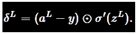
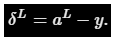

In this post, I am going to implement all the better techniques we discussed in earlier posts, like a better cost function, new way of weight initialization and the L2 regularization. Almost all of the code is taken from chapter-3 of Michael Nielsen's excellent book, Neural Networks And Deep Learning. This post is just an attempt of understanding the code better myself by explaining it, kind of like a mock exercise but if it helps you, freakin' great then.
Cost Function
The most significant change, impactwise which we have made in the past Neural Net is using the Cross Entropy Cost Function instead of the Mean Square Error (MSE) cost function. In past blog I have discussed that how using the cross entropy cost function solves the problem of learning slowdown caused by MSE cost function.
Using the cross entropy cost also effected equations of the backpropagation we derived earlier for MSE cost. Using the MSE cost function, the delta for the last L'th layer is defined as,

This includes the derivative of sigmoid function which is the main culprit behind causing the learning slowdown. To get rid of this term, intelligent people studying artificial intelligence made Cross Entropy cost function such that it would help them to get rid of the sigmoid derivative term,

and they made it happen. All the derivations and details are covered in this blog post here.